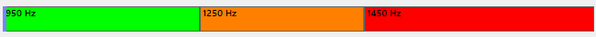

Whistle Program The mouse is mainly used to control the mouse cursor using 'whistling'.
It is an alternative to other programs that allow you to control your computer without using Hands.
The program is free and distributed under an open source license.
Program features Whistle Mouse are largely editable. But the program has been Prepared and configured to work right after starting. Further description of the program in the "Quick Start" section will be He was referring to the original configuration of the program.
Quick Start
First, run the system properties microphone and turn off enhancement options (e.g. noise reduction). Program It works best without these features. (You can find them in the control panel or a dedicated microphone application attached to the card sound)
You must also install NET6.0
Principle.
The program distinguishes 3 frequency ranges. Best Range Settings during testing the program turned out (800Hz – 1700Hz and 950,1250 and 1450 Hz split) and such settings are applied (you can edit according to your preferences).

800Hz 1700Hz
Whistling in the 'green, orange and red' range dials the number:
Green - 1
Orange – 2
Red – 3
1 Continuous whistling in the green range moves the mouse backwards
2 Continuous whistling in the orange range moves the mouse to Front.
3 A few seconds whistling in the red range turns on or disables the STAND-BY function
- STAND BY enabled = no mouse simulation and sound on
- STAND BY off = mouse simulation and sound off.
A sound that is turned on, such as a song, interferes with frequency recognition
12 – Whistling in green and then without Orange gaps trigger FLIP that is, changing the movement of the mouse from horizontal to vertical or vice versa
So green number 1 and orange number 2 = code 12. Code 12 is the FLIP function
21 - Whistling in the range orange and then without interruption in the green range causes launching the SCROLL function, i.e. scrolling the page.
From now on, constant whistling in the green or orange range means using scroll forward or backward. Whistling again 21 or 12 will return to cursor control.
So orange number 2 and green number 1 = code 21. Code 21 is a Scroll feature.
32 – Clicking the left mouse button
323 – Double click left mouse button
3232 - Click the left mouse button and hold.
321 - Right-click.
121 – Cursor all the way back
212 – Cursor up to front
123 – Tool box. Tool box is an additional set of functions available from the list.
Tool box control: 1 – backward, 2 – forward, 32 – enter, 323 - output
The program is largely editable. Upon deeper knowledge with the operation of the program you will be able to change the function according to your own Preferences
CALL FUNCTION:
Default The function is called by whistling in 1 range, and then without interruption to another range. From my tests, it appears that this is The simplest method. And by default, this is how the functions are configured, e.g. mouse click is 3 and then without interruption 2.
The program supports one more type.
For example: Red (3) BREAK and again RED (3). It is A method that needs to be practiced.
By default, MOUSE_CLICK is set to 111 – so whistle should be done (1 break, 1 break, 1 break).